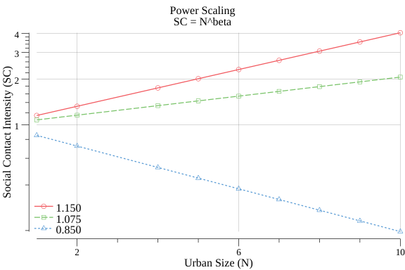

5 Urban Scaling
Economies of scale exists but are balanced by diseconomies of scale. “If economies of scale always work, why isn’t there just one company?” (???)
5.1 Settlement-Size Scaling
5.1.1 Prehistoric
Haas
Settlement size predicts extreme variation in the rates and magnitudes of many social and ecological processes in human societies. Yet, the factors that drive human settlement-size variation remain poorly understood. Size variation among economically integrated settlements tends to be heavy tailed such that the smallest settlements are extremely common and the largest settlements extremely large and rare. The upper tail of this size distribution is often formalized mathematically as a power-law function. Explanations for this scaling structure in human settlement systems tend to emphasize complex socioeconomic processes including agriculture, manufacturing, and warfare—behaviors that tend to differentially nucleate and disperse populations hierarchically among settlements. But, the degree to which heavy-tailed settlement-size variation requires such complex behaviors remains unclear. By examining the settlement patterns of eight prehistoric New World hunter-gatherer settlement systems spanning three distinct environmental contexts, this analysis explores the degree to which heavy-tailed settlement-size scaling depends on the aforementioned socioeconomic complexities. Surprisingly, the analysis finds that power-law models offer plausible and parsimonious statistical descriptions of prehistoric hunter-gatherer settlement-size variation. This finding reveals that incipient forms of hierarchical settlement structure may have preceded socioeconomic complexity in human societies and points to a need for additional research to explicate how mobile foragers came to exhibit settlement patterns that are more commonly associated with hierarchical organization. We propose that hunter-gatherer mobility with preferential attachment to previously occupied locations may account for the observed structure in site-size variation.
5.2 Scaling Laws - to the better or to the worse?
“Scaling laws are power-law relationships of the form \(Y = cX^β\), where \(Y\) represents a variable which varies in a systematic way with the size \(X\) of subsystems and \(c\) and \(β\) are parameters. They have two powerful advantages: they summarize structural features of systems in a very efficient way, and they reveal the effect of universal constraints acting on the structure and development over several orders of magnitude in these systems… The main resources enabling urban development are the technical and cultural innovations which increase the productivity, the diversity and the cohesion of human activities; the availability of these resources relies on the production and exchanges of information … The role of cities as centers for the integration of human capital and as incubators of invention was rediscovered by the “new” economic growth theory, which posits that knowledge spillovers among individuals and firms are the necessary underpinnings of growth (Lucas 1988, Romer 1986) … This seemingly spontaneous process, whereby knowledge produces growth and growth attracts knowledge, is the engine by which urban centers sustain their development through unfolding innovation. The essential role of knowledge generation, recombination and circulation within and across urban areas must be at the core of any proposed explanation for urban scaling." (Pumain 2006)
There are however, other more critical views on the story of urban agglomeration. Naik and Oldfield (2015) Urbanisation inflicted by Capitalism Urbanization is seen as a an enterprise of The Urban Industry - a term for the ‘interlinked and interdependent relationships among NGOs, academia, business, high culture and governments’ that keeps afloat the story of ‘cities as centers of innovation, creativity, happiness, good health and, even astonishingly the cause and the solution for global warming’. Naik and Oldfield present evidence to the quite contrary: ‘cities are in fact creators, incubators and perpetuators of poverty and inequality.’ Actually, as they say: ‘The urbanisation of the world should not be celebrated’.
5.3 Scaling Math
Urban Scaling Research finds that Social Contact Intensity is linked to City Size approximately as a power law:
\(k(N) = k_{0} N^β\)
with β = 1 + δ and δ ≈ 1/6 acording to Bettencourt.

Fig 2. Power Law of Urban Scaling
Fig 2 illustrates the power of scaling. The red line has δ = 0.15 and the green half of this, δ = 0.075. Both are cases of positive or superlinear scaling. For comparion δ can also be negative (sublinear), i.e.larger cities have smaller effects, as illustrated on the figure with δ = 0.85 (blue line).
A scaling factor of δ = 0.15 is fairly strong: An urban area with 5 times the population - 1 million people compared to another with 200.000 people - has the double Social Contact Intensity. 10 times the population (2 million people) gives 4 times the intensity.
‘Social Contact Intensity’ - as we use it here - is an umbrella term. Many aspects of social and economic activity within urban areas will follow such power laws. Many empirical studies find power laws with β around 1.1 - 1.2 as a general charcteristic. As Bettencourt puts it: ‘Cities primary function is open-ended social reactors… [which] exist in similar, but changing forms over a huge range of scales… [and] evolve acording to a small set of principles that operate locally… [so that] the average social, spatial, and infrastructural properties of cities… [follow] scaling relations that apply to all urban systems.’ .
5.4 Urban Catastrophes
The probabilities of electricity blackouts may be influenced by the sizes of cities more than by the details of power grids.
Electric power blackouts can occur on all scales, from local outages to country-wide failures. The probability of a given event depends on the size of the region it affects, according to a mathematical relationship called a power law. The reason for the power law hasn’t been clear, but a new model suggests that it results from the same kind of distribution in the sizes of cities [1]. The model’s creators say that understanding the factors that influence blackout probabilities could help engineers make electricity grids more robust.
Ball (2020) City Size Blackouts
Nesti (2020) Emergence of Scale-Free Blackout Sizes in Power Grids (PayWall)
TODO Gabaix, X. (1999). ‘Zipfs law for cities: an explanation’, Quarterly Journal of Economics, vol. 114(3) (August), pp. 738-67.
Scaling laws are, in the context of complex systems, emer- gent properties, and so their presence would appear to speak to the empirical relevance of complexity. To the extent that the findings of scaling laws in very different data sets are believable, this can and has (Stanley et al., 2000) been interpreted as evidence of universal properties in economic data. However, the implications of this new literature for economic complexity are still very unclear. The reason for this is that literature on power and scaling laws has yet to move beyond the development of statistical measures to the analyses of model com- parison and evaluation. In other words, many of the empirical claims in this literature concerning the presence of a particular law in some data set fail to address the standard statistical issues of identification and statistical power ade- quately. Hence, it is difficult to conclude that the findings in this literature can allow one to infer that some economic environment is complex.
Durlauf (2004) Durlauf 2004 Complexity and Empirical Economics ( See recs/320-econophysics)